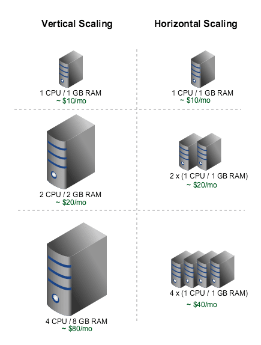
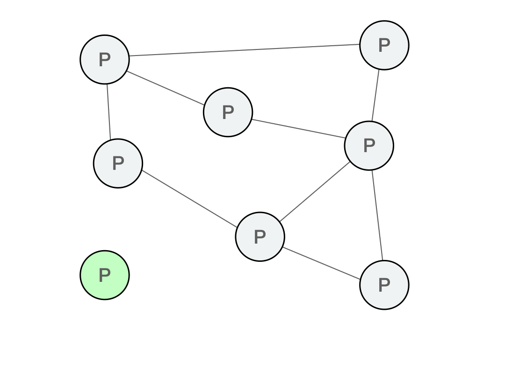
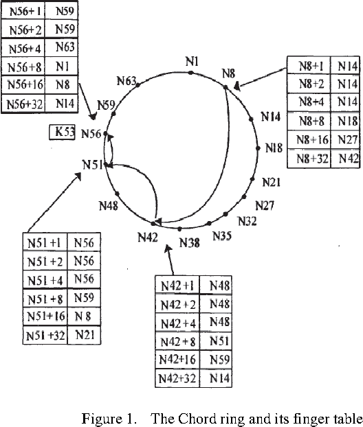
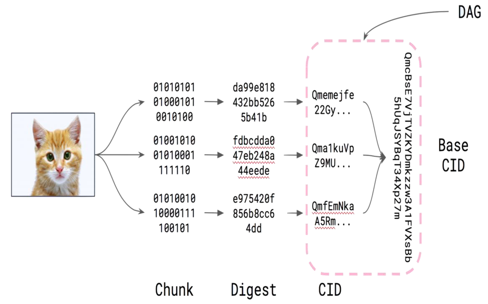
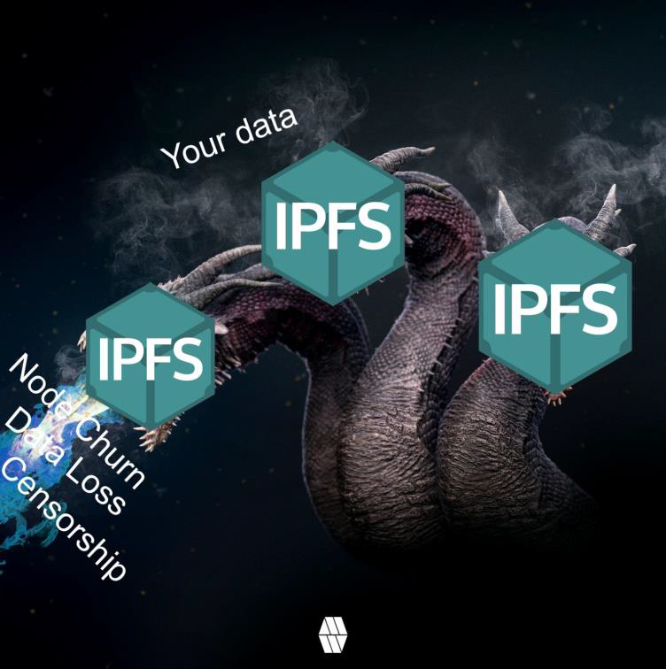
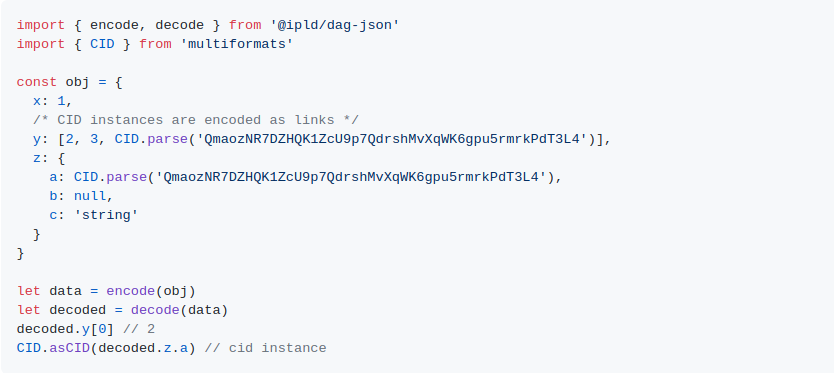
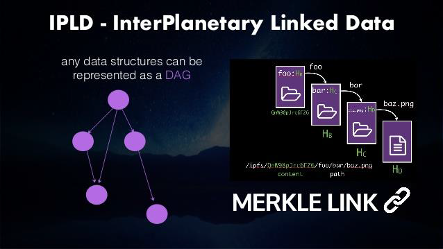

<!doctype html>
<html lang="en">
  <head>
    <meta charset="utf-8">

    <title>Centralized and Decentralized computing</title>

    <meta name="author" content="Dhruvin Parikh">

    <meta name="apple-mobile-web-app-capable" content="yes" />
    <meta name="apple-mobile-web-app-status-bar-style" content="black-translucent" />

    <meta name="viewport" content="width=device-width, initial-scale=1.0, maximum-scale=1.0, user-scalable=no, minimal-ui">

    <link rel="stylesheet" href="../../reveal.js/css/reveal.css">
    <link rel="stylesheet" href="../../reveal.js/css/theme/black.css" id="theme">

    <!-- Code syntax highlighting -->
    <link rel="stylesheet" href="../../reveal.js/lib/css/zenburn.css">

    <!-- Printing and PDF exports -->
    <script>
      var link = document.createElement( 'link' );
      link.rel = 'stylesheet';
      link.type = 'text/css';
      link.href = window.location.search.match( /print-pdf/gi ) ? '../../reveal.js/css/print/pdf.css' : '../../reveal.js/css/print/paper.css';
      document.getElementsByTagName( 'head' )[0].appendChild( link );
    </script>

    <!--[if lt IE 9]>
    <script src="../reveal.js/lib/js/html5shiv.js"></script>
    <![endif]-->

    <style>
      .reveal .slides h1, .reveal .slides h2, .reveal .slides h3 {
        text-transform: none;
      }

      .two-column {
        display: flex;
        flex-wrap: wrap;
      }

      .two-column em {
        margin: 20px;
      }

      .reveal .big-and-bold {
        font-weight: bold;
        font-size: 135%;
      }

      .reveal .shrunk-a-bit {
        font-size: 90%;
      }

      .reveal .shrunk-a-bit pre {
        width: 100%;
      }

      .reveal pre {
        width: 100%;
      }

      .reveal .highlight {
        color: yellow;
        font-weight: bold;
      }

      .reveal .highlightRed {
        color: red;
        font-weight: bold;
      }
    </style>
  </head>

  <body>
    <div class="reveal">
      <div class="slides">

<!------------------------------------------------------->


<section data-markdown><script type="text/template">

## CSBC 2000 - Essentials of Blockchain Development and Security

### Class 3: Centralized and Decentralized computing

*Dhruvin Parikh*

</script></section>

<section data-markdown><script type="text/template">

## Recap

* Ethereum is a virtual machine for any DApp's transactions
* Blockchain is an example of DLT which (in most cases) is a state machine
* Smart contracts define state transitions on the blockchain
* PoS is an improvement over PoW
* There are several interesting blockchain protocols, some backed by physical utilities

</script></section>

<section data-markdown><script type="text/template">

## Class plan

* We'll look at the networking component of blockchains
* How blockchains technically compare to databases
* Compare a blockchain and a database
* Define Consistency, Availability and Partition Tolerance
* Give a high-level overview of Single-leader, multi-leader and distributed hash table

</script></section>

<section data-markdown><script type="text/template">

## Databases

* Store data!
* Come in all kinds of languages, data models, architectures, ... 
* In the pre-cloud days sit in the same machine as content host

</script></section>

<section data-markdown><script type="text/template">

## Scaling databases

* If I wanted to scale my webapp, I can buy a very big computer with a lot of storage (vertical scaling)
* Or I can buy a few more computers and run my webapp on all of them
* Vertical scaling leads to single point of failure
* Horizontal scaling requires replication

</script></section>

<section data-markdown><script type="text/template">

## Scaling databases



</script></section>

<section data-markdown><script type="text/template">

## Database performance

* Many ways of comparing databases in literature
 * ACID: Atomicity, Consistency, Isolation, Isolation, Durability 
 * BASE: Basic-Availability, Soft-state, Eventual Consistency
* We'll be using CAP
 * Consistency, Availability, Partition-Tolerance 
 * Not the best, but a good start

</script></section>

<section data-markdown><script type="text/template">

## Consistency

* Distributed DBs need to handle reads and writes
* Recall state; this applies to a distributed DB as well
* When there is a write in one node, a read in another node should return the most up-to-date result
* There is also a notion of eventual consistency
* If it takes database state across all nodes some time to fully be consistent, it's fine as long as read values return an up-to-date-value
</script></section>

<section data-markdown><script type="text/template">

## Availability

* When a query is made to any node in the network, it must return a non-error response
* This includes when there are node failures
* Delay is fine as long as it eventually gets back

</script></section>

<section data-markdown><script type="text/template">

## Partition-Tolerance

* Distributed DB needs to be able to operate after being partitioned
* Partitions will have minimal to no communication with each other
* This pretty much always needs to be assumed because of internet infrastructure

</script></section>

<section data-markdown><script type="text/template">

## CAP Theorem

* CAP Theorem (Brewer, 2000; Gilbert, Lynch, 2002): can't have all 3


</script></section>

<section data-markdown><script type="text/template">

## Distributed Database Paradigms

* A distributed DB cannot have CAP as there can be two partitions, G1 and G2, of nodes within the system that don’t communicate with each other, and a write query to G1 followed immediately by a read request to G2 will have inconsistent values as G2 will not show the write query to G1
* DBs can thus (very vaguely) be classified into AP(available but not consistent under network partitions) and CP(consistent but not available under network partitions)

</script></section>

<section data-markdown><script type="text/template">

## Single Leader

* One node is leader accepts writes and propagates them 
* All other nodes accept reads
* CP side of CAP
* If a follower fails, it can sync when it returns
* If a leader fails, other nodes "elect" a leader (usually based on most up-to-date)
</script></section>

<section data-markdown><script type="text/template">

## Single Leader


</script></section>

<section data-markdown><script type="text/template">

## Multi Leader

* Many leaders, all accept writes
* However, can have write conflics

</script></section>

<section data-markdown><script type="text/template">

## Multi leader


</script></section>

<section data-markdown><script type="text/template">

## 15 minute break

</script></section>

<section data-markdown><script type="text/template">

## Leaderless

* Dynamo Based System
* P2P system

</script></section>

<section data-markdown><script type="text/template">

## Dynamo

* Created by Amazon for internal use (!= DynamoDB) 
* AP
* All nodes accept reads/writes
* Eventual Consistency
 * Anti-entropy background process 
 * Read Repair
 * Quorum: w+r=n

</script></section>

<section data-markdown><script type="text/template">

## P2P

* This is the fun stuff
 * Any computer can join the network
* Always require some bootstrap nodes
 * Copy address book
 * Finds own peers after

</script></section>

<section data-markdown><script type="text/template">

## P2P



</script></section>

<section data-markdown><script type="text/template">

## Distributed Hash Tables

* Peers are arranged in some kind of special topology
* Every peer stores a representation of that topology
 * Knows its own position in topology
 * Has some mechanism for searching for other nodes in there
* Records are stored as K-V pairs
 * Keys are in the same address space as peer addresses
 * This way, no need to have read/wrote consistency instead can simply query keys across the network

</script></section>

<section data-markdown><script type="text/template">

## Chord

* Circle topology
* Data gets assigned a random key 
 * Needs to be collision resistant, SHA
* Can define a distance between a key and an address based on >,<,=
* Optimized by a Finger Table
 * Stores the closest node to every power of 2 offset by node's position

</script></section>

<section data-markdown><script type="text/template">

## Chord


</script></section>

<section data-markdown><script type="text/template">

## Kademlia

* Uses a binary tree instead of circle
* XOR instead of successor
 * Symmetrical
 * Gets the closest common ancestor
* Prefix based addressing
* 4 messages: PING,STORE, FIND_NODE, FIND_VALUE

</script></section>

<section data-markdown><script type="text/template">

## Kademlia


</script></section>

<section data-markdown><script type="text/template">

## Kademlia

* K-bucket = address book (remember bootstrap)
* Each bucket stores k nodes in the range [2^i, 2^{i+1}] far away from it
* Knows a lot about neighbors and just enough about distant peers
* Log(n) hops to match key-val pairs anywhere in network
* 10000000 nodes would take 20 hops!
* Redundancy parameter, concurrency parameter
* Frequently shares values with neighbors
</script></section>

<section data-markdown><script type="text/template">

## Kademlia

* More secure considerations than (most) alternatives
    * Self-stabilization 
* Battle-tested
    * Bittorrent, Gnutella, IPFS, Eth (kind of)
</script></section>

<section data-markdown><script type="text/template">

## Kademlia


</script></section>

<section data-markdown><script type="text/template">

## The Bitcoin Network

* RPC calls
* Denial of service protection
* TCP connections
* By default, 8 outgoing conns
* Supernode: all nodes (about 10k)
* Also has bootstraps
 * Used to use IRC Clients!

</script></section>

<section data-markdown><script type="text/template">

## Full Client vs Light Client

* Full node isn't always an option...
* Storage and processing requirements are very high
* Light clients are a good alternative as they operate solely on headers (recall block structure)
 * Usually communicate with full node 
 * Needs more bandwidth
 * Used by wallets

</script></section>

<section data-markdown><script type="text/template">

## Full Client vs Light Client


</script></section>

<section data-markdown><script type="text/template">

## Ethereum: DevP2P

* Uses Kademlia-like DHT
* distance(n1, n2) = keccak256(n1) XOR keccak256(n2) 
* UDP packets
* Nodes maintain an ENR (node record)

</script></section>

<section data-markdown><script type="text/template">

## IPFS

* InterPlanetary File System
* Developed by Juan Benet ~2015
* Censorship resistant mirrors during multiple political events • Supported under the hood by libp2p
* Filecoin -> IPFS -> libp2p
* Libp2p has implementations in several languages

</script></section>

<section data-markdown><script type="text/template">

## IPFS - MerkleDAG

* Content is chunked (512 bytes) and hashed
* Each hash has some extra information added which represents the CID: Content IDentifier
* Dag.ipfs.io has a visualizer

</script></section>

<section data-markdown><script type="text/template">

## IPFS - MerkleDAG



</script></section>

<section data-markdown><script type="text/template">

## IPFS Recovery

* "Erasure coding (EC) is a method of data protection in which data is broken into fragments, expanded and encoded with redundant data pieces and stored across a set of different locations or storage media"*
* It is worth consuming some extra storage to obtain better data resiliency and routing performance
* Redundant data can be spread across the network, as hydra heads, for better delivery guarantees and longer lifespan

</script></section>

<section data-markdown><script type="text/template">

## IPFS recovery


</script></section>

<section data-markdown><script type="text/template">

## IPLD

* InterPlanetary Linked Data
* "An ecosystem of formats and data structures for building applications that can be fully decentralized"

</script></section>

<section data-markdown><script type="text/template">

## IPLD




</script></section>

<section data-markdown><script type="text/template">

## End of Class

</script></section>


<!------------------------------------------------------->


      </div>

    </div>

    <script src="../../reveal.js/lib/js/head.min.js"></script>
    <script src="../../reveal.js/js/reveal.js"></script>
    <script src="../../reveal.js/plugin/zoom-js/zoom.js"></script>

    <script>

      // Full list of configuration options available at:
      // https://github.com/hakimel/reveal.js#configuration
      Reveal.initialize({
        controls: true,
        progress: true,
        history: true,
        center: true,

        transition: 'none', // none/fade/slide/convex/concave/zoom

	math: {
          mathjax: '../lib/MathJax/MathJax.js',
          config: 'TeX-AMS_SVG-full',
	},

        // Optional reveal.js plugins
        dependencies: [
          { src: '../../reveal.js/plugin/markdown/marked.js', condition: function() { return !!document.querySelector( '[data-markdown]' ); } },
          { src: '../../reveal.js/plugin/markdown/markdown.js', condition: function() { return !!document.querySelector( '[data-markdown]' ); } },
          { src: '../../reveal.js/plugin/highlight/highlight.js', async: true, callback: function() { hljs.initHighlightingOnLoad(); } },
          { src: '../../reveal.js/plugin/math/math.js', async: true }
        ]
      });

    </script>

  </body>
</html>